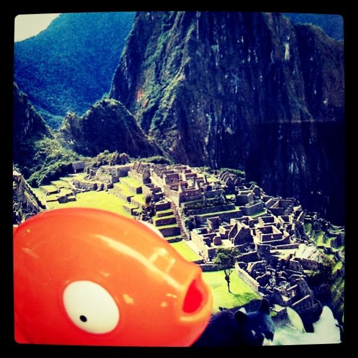

Mon, 22 Nov 2010 02:36:00 · peru · rango · machu picchu · travel · city · scene
mr timms rango in machu picchu peru

Mr. Timms (Rango) in Machu Picchu, Peru.
Mon, 22 Nov 2010 02:36:00 · peru · rango · machu picchu · travel · city · scene

Mr. Timms (Rango) in Machu Picchu, Peru.